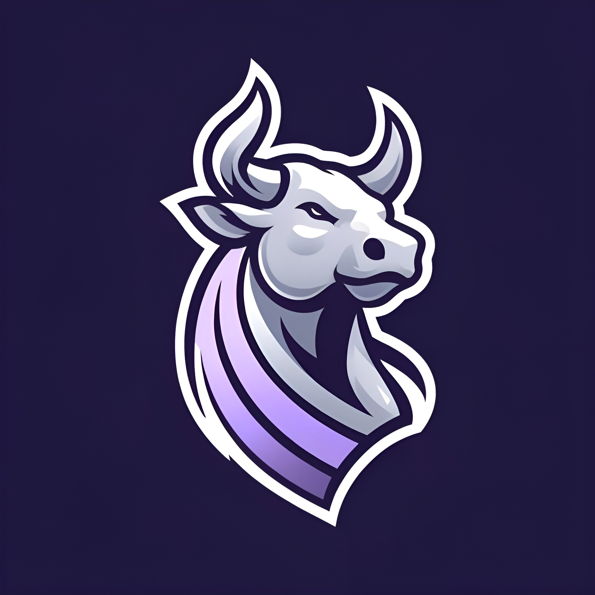
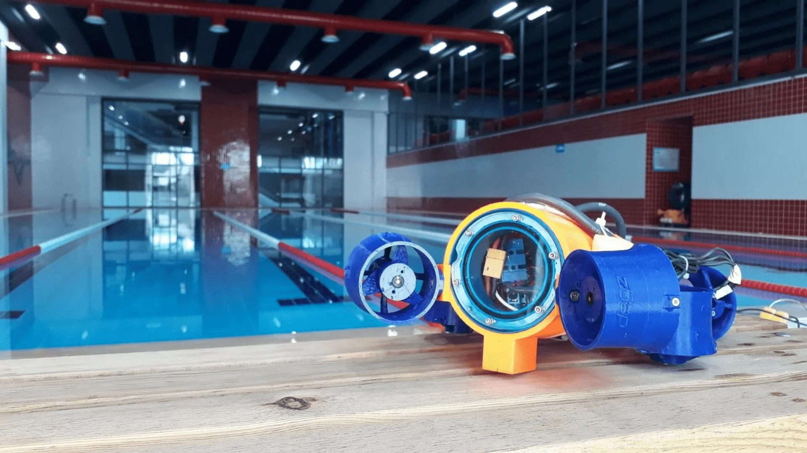
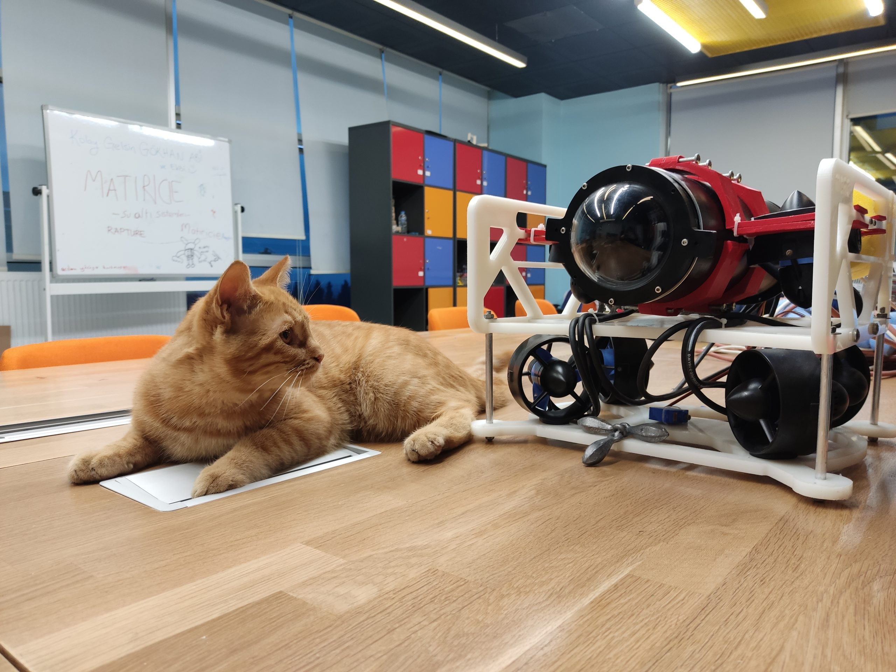
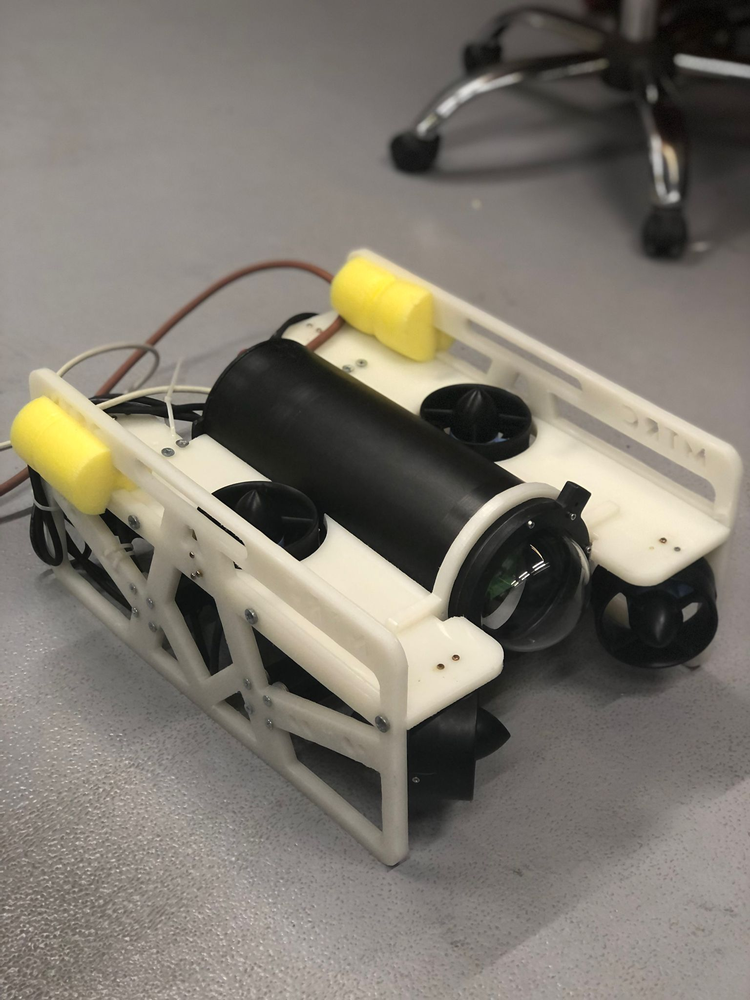
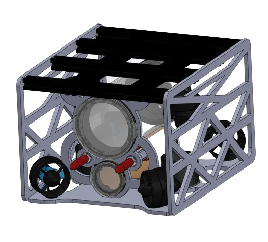

Projelerim
🏆 Teknofest 2024

AsiFin - Finansal Strateji Platformu
Finansal stratejilerin test edilmesini sağlayan web tabanlı bir SaaS girişimidir.
🏆 GSB Hackathon 2024

SoruCan - LLM Projesi
Büyük Dil Modeli kullanan akıllı bir soru-cevap platformu.
🏆 Bulutklinik Hackathon

Asimed - Sağlık Teknolojisi
Yapay zeka destekli ön teşhis, online anamnez ve doktor destek ekranları.

MTRC-Beta Sualtı Aracı
Teknofest yarışması için geliştirilen gelişmiş otonom sualtı aracı.

MTRC-Alpha Sualtı Aracı
Matiricie takımının ilk otonom sualtı aracı projesi.

Poseidon Sualtı Aracı
RoboNation Robosub yarışması için geliştirilen uluslararası rekabet düzeyinde sualtı aracı.

Maikong Sualtı Aracı
Denizaltı haritalandırma ve keşif için geliştirilen özel bir sualtı robotik platform projesi.